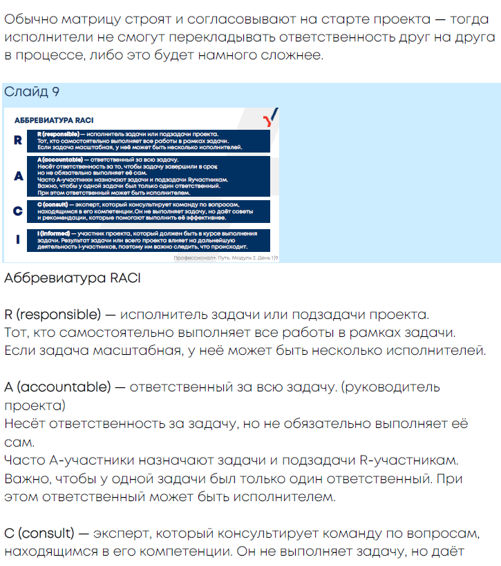
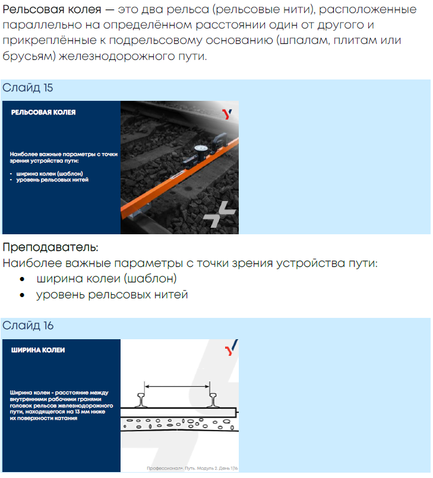

Комплект для запуска
Алгоритм, промпт для помощника, чек-лист проверки, пример и три скрипта одним архивом.
Скачать комплект →Получить рабочий сценарий преподавателя со скриншотами и номерами слайдов из пары .docx + .pptx. Особенно критично для документов на 100+ страниц и колод на 200+ слайдов.
Слайды сверялись и вставлялись вручную. 2–3 часа на сценарий одного тренингового дня объёмом 220–250 страниц.
Проверяемый workflow Render → Match → Review → Insert → Validate:
AI/скрипты строят карту соответствий и выполняют повторяемые операции. Человек подтверждает спорные места и не даёт системе угадывать при слабом совпадении.
На странице кейса показаны фрагменты готового сценария со встроенными слайдами. Открытый алгоритм и скрипты опубликованы в Lab и репозитории pptx-scenario-layout.
Это не универсальная кнопка загрузки: сначала нужен малый тестовый блок и проверка якорей.
Система не угадывает спорные соответствия, а формирует список для проверки.
Алгоритм, промпт для помощника, чек-лист проверки, пример и три скрипта одним архивом.
Скачать комплект →Как устроен Render → Match → Review → Insert → Validate и где автоматизация должна остановиться.
Читать разбор →Ниже — три страницы готового сценария из большой рабочей пары. На каждой странице уже стоят номера и встроены скриншоты слайдов: именно так преподаватель видит сценарий во время занятия.



Листай вправо. Пример взят из пары: сценарий на 260 страниц и презентация на 272 слайда.
Тестовый блок считается пройденным, если номера соответствуют содержанию, порядок не нарушен, скриншоты показывают нужные слайды, а спорные места явно вынесены на решение человека.
Скачать карту проверки →